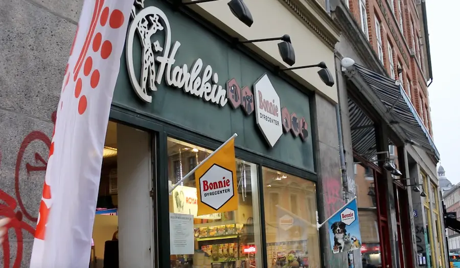
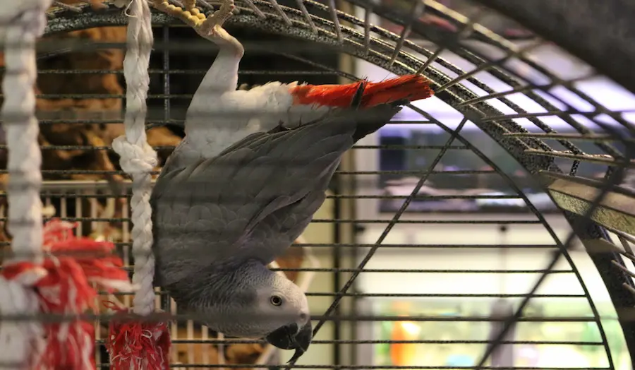
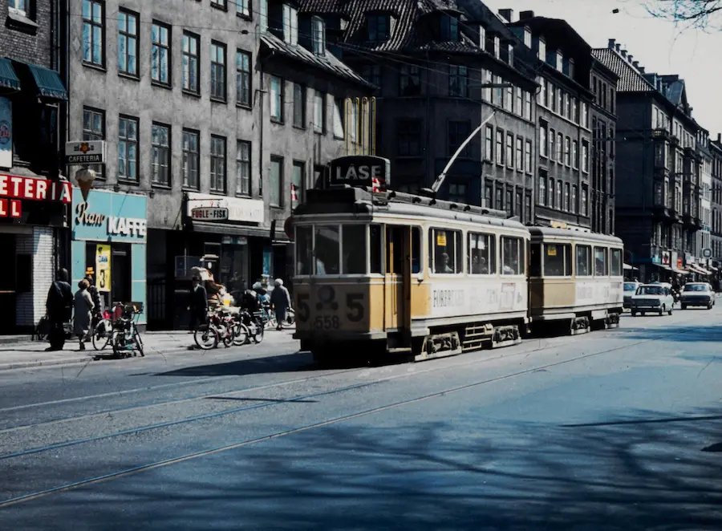
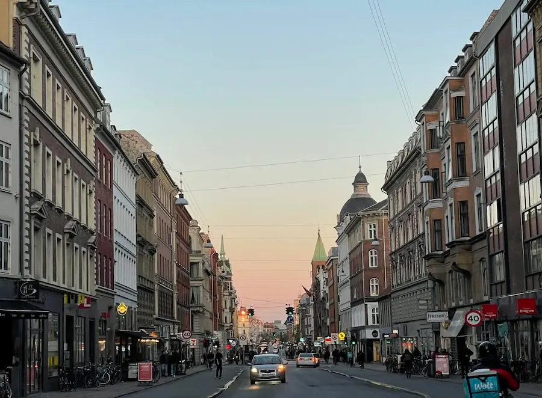

Hvem er vi?
Lidt om os
Vi er en lokal dyrehandel på Nørrebrogade i København, der tilbyder et stort udvalg af produkter til hunde, katte, fugle, gnavere og fisk i vores butik. Vi har høj fokus på personlig service og faglig rådgivning.
Hvorfor Harlekin?
Navnet Harlekin stammer fra en sjælden og farverig papegøje med samme navn og er valgt for at afspejle glæden ved dyr, mangfoldighed og den særlige personlighed, som kendetegner dyrehandelen.
Siden 1931
Butikken har ligget i lokalområdet siden 1931 og bygger på generationers erfaring, stolte traditioner og en dyb passion for dyr, hvilket har gjort den til et velkendt og tillidsfuldt samlingspunkt for dyreejere gennem tiden.
Lokalsamfundet betyder alt
Lokalsamfundet betyder alt for Harlekin, da det er her, butikken finder sine nærmeste kunder, venner og støtte, og derfor lægger butikken stor vægt på personlig service og relationer til alle, der elsker dyr.
